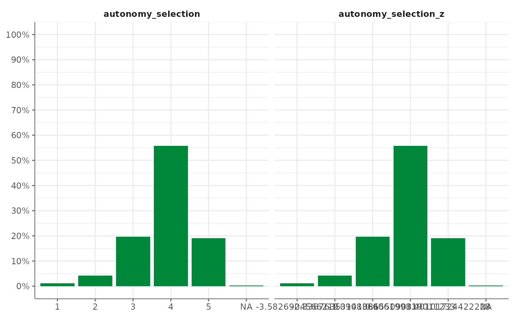

Tidycomm provides four functions to easily transform continuous scales and to standardize them:
-
reverse_scale()simply turns a scale upside down -
minmax_scale()down- or upsizes a scale to new minimum/maximum while retaining distances -
center_scale()subtracts the mean from each individual data point to center a scale at a mean of 0 -
z_scale()works just likecenter_scale()but also divides the result by the standard deviation to also obtain a standard deviation of 1 and make it comparable to other z-standardized distributions -
setna_scale(): Sets specified values toNAin selected variables or the entire data frame. -
recode_cat_scale(): Recodes categorical variables based on provided assignments. -
categorize_scale(): Recodes numeric scales into categorical variables based on provided breaks and labels. -
dummify_scale(): Transforms categorical variables into dummy variables.
These functions provide convenience wrappers that make it easy to read and spell out how you transformed your scales.
The easiest one is to reverse your scale. You can just specify the
scale and define the scale’s lower and upper end. Take
autonomy_emphasis as an example that originally ranges from
1 to 5. We will reverse it to range from 5 to 1.
The function adds a new column named
autonomy_emphasis_rev:
WoJ %>%
reverse_scale(autonomy_emphasis,
lower_end = 1,
upper_end = 5) %>%
dplyr::select(autonomy_emphasis,
autonomy_emphasis_rev)
#> # A tibble: 1,200 × 2
#> autonomy_emphasis autonomy_emphasis_rev
#> <dbl> <dbl>
#> 1 4 2
#> 2 4 2
#> 3 4 2
#> 4 5 1
#> 5 4 2
#> 6 4 2
#> 7 4 2
#> 8 3 3
#> 9 5 1
#> 10 4 2
#> # ℹ 1,190 more rowsAlternatively, you can also specify the new column name manually:
WoJ %>%
reverse_scale(autonomy_emphasis,
name = "new_emphasis",
lower_end = 1,
upper_end = 5) %>%
dplyr::select(autonomy_emphasis,
new_emphasis)
#> # A tibble: 1,200 × 2
#> autonomy_emphasis new_emphasis
#> <dbl> <dbl>
#> 1 4 2
#> 2 4 2
#> 3 4 2
#> 4 5 1
#> 5 4 2
#> 6 4 2
#> 7 4 2
#> 8 3 3
#> 9 5 1
#> 10 4 2
#> # ℹ 1,190 more rowsminmax_scale() just takes your continuous scale to a new
range. For example, convert the 1-5 scale of
autonomy_emphasis to a 1-10 scale while keeping the
distances:
WoJ %>%
minmax_scale(autonomy_emphasis,
change_to_min = 1,
change_to_max = 10) %>%
dplyr::select(autonomy_emphasis,
autonomy_emphasis_1to10)
#> # A tibble: 1,200 × 2
#> autonomy_emphasis autonomy_emphasis_1to10
#> <dbl> <dbl>
#> 1 4 7.75
#> 2 4 7.75
#> 3 4 7.75
#> 4 5 10
#> 5 4 7.75
#> 6 4 7.75
#> 7 4 7.75
#> 8 3 5.5
#> 9 5 10
#> 10 4 7.75
#> # ℹ 1,190 more rowscenter_scale() moves your continuous scale around a mean
of 0:
WoJ %>%
center_scale(autonomy_selection) %>%
dplyr::select(autonomy_selection,
autonomy_selection_centered)
#> # A tibble: 1,200 × 2
#> autonomy_selection autonomy_selection_centered
#> <dbl> <dbl>
#> 1 5 1.12
#> 2 3 -0.876
#> 3 4 0.124
#> 4 4 0.124
#> 5 4 0.124
#> 6 4 0.124
#> 7 4 0.124
#> 8 3 -0.876
#> 9 5 1.12
#> 10 2 -1.88
#> # ℹ 1,190 more rowsFinally, z_scale() does more or less the same but
standardizes the outcome. To visualize this, we look at it with a
visualized tab_frequencies():
WoJ %>%
z_scale(autonomy_selection) %>%
tab_frequencies(autonomy_selection,
autonomy_selection_z) %>%
visualize()
To set a specific value to NA:
WoJ %>%
setna_scale(autonomy_emphasis, value = 5) %>%
dplyr::select(autonomy_emphasis, autonomy_emphasis_na)
#> # A tibble: 1,200 × 2
#> autonomy_emphasis autonomy_emphasis_na
#> <dbl> <dbl>
#> 1 4 4
#> 2 4 4
#> 3 4 4
#> 4 5 NA
#> 5 4 4
#> 6 4 4
#> 7 4 4
#> 8 3 3
#> 9 5 NA
#> 10 4 4
#> # ℹ 1,190 more rowsFor recoding categorical scales:
WoJ %>%
dplyr::select(country) %>%
recode_cat_scale(country, assign = c("Germany" = "german", "Switzerland" = "swiss"), other = "other")
#> The following unassigned values were found in country : Austria, Denmark, UK . They were recoded to the 'other' value ( other ).
#> # A tibble: 1,200 × 2
#> country country_rec
#> * <fct> <fct>
#> 1 Germany german
#> 2 Germany german
#> 3 Switzerland swiss
#> 4 Switzerland swiss
#> 5 Austria other
#> 6 Switzerland swiss
#> 7 Germany german
#> 8 Denmark other
#> 9 Switzerland swiss
#> 10 Denmark other
#> # ℹ 1,190 more rowsTo recode numeric scales into categories:
WoJ %>%
dplyr::select(autonomy_emphasis) %>%
categorize_scale(autonomy_emphasis,
lower_end =1, upper_end =5,
breaks = c(2, 3),
labels = c("Low", "Medium", "High"))
#> # A tibble: 1,200 × 2
#> autonomy_emphasis autonomy_emphasis_cat
#> * <dbl> <fct>
#> 1 4 High
#> 2 4 High
#> 3 4 High
#> 4 5 High
#> 5 4 High
#> 6 4 High
#> 7 4 High
#> 8 3 Medium
#> 9 5 High
#> 10 4 High
#> # ℹ 1,190 more rowsAnd to create dummy variables:
WoJ %>%
dplyr::select(temp_contract) %>%
dummify_scale(temp_contract)
#> # A tibble: 1,200 × 3
#> temp_contract temp_contract_permanent temp_contract_temporary
#> * <fct> <int> <int>
#> 1 Permanent 1 0
#> 2 Permanent 1 0
#> 3 Permanent 1 0
#> 4 Permanent 1 0
#> 5 Permanent 1 0
#> 6 NA NA NA
#> 7 Permanent 1 0
#> 8 Permanent 1 0
#> 9 Permanent 1 0
#> 10 Permanent 1 0
#> # ℹ 1,190 more rows